中国约有超过4亿人正在学习外语，但目前主流的语言学习的工具和方法还是前AI时代的。用字典查词、单词表记单词、读枯燥的阅读理解和听力，语言学习仍然是一个头疼的过程。（我选择改造的产品是有道电子词典）
拖动照片可移动位置，悬停或点击可播放动画。键盘方向键移动，Escape 复位。
1. 背景
核心用户群
AI+学习的话题很大，我想从一个自己每天亲身经历的痛点开始入手。最优先服务的是已有一定语言基础、且日常会持续接触目标语言的用户，比如：
- 在外企工作
- 需要读国外文献的学生
- 广大留学生群体
- 喜欢某个国外文化
- 使用 Mac OS 系统
这些用户每天都在查词和记词，接触语言环境。这个需求高频、真实、持续。
有价值的场景
除了自己的亲身经历，我对身边学习不同外语的用户们进行了调研（学英语的中国人，和学中文的韩国人）
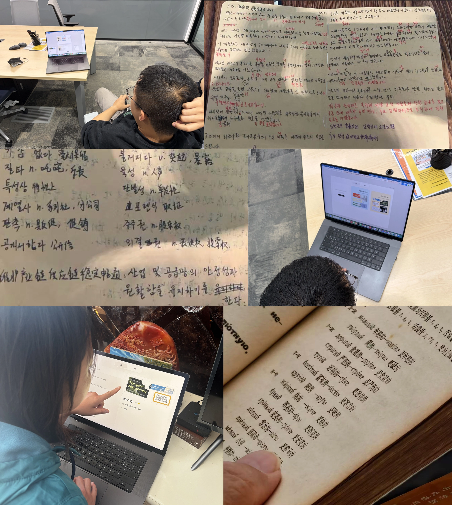
根据大家的反馈，我总结了一些高频痛点。
学习语言的难点
🧑🏻💻语言学习者
- 单词背了又忘
- 找不到感兴趣、
难度又合适的材料 - 每天读很多，
真正留下的很少 - 筛选、整理材料
太花时间 - 学习时间零碎，
总被打断 - 收藏一堆资料，
却没再打开 - 看得懂，
开口却用不出来 - 看不到进步，很难坚持
我发现了2个高频痛点还未被解决：
拿着单词书背单词太痛苦，脱离了场景
学习的资料和生活中看到的语料完全不同
Agent 有机会解决这两个痛点
我们先回忆一下一个经典（而痛苦）的学习流程：
- 遇到一个
不会的单词 - 复制它
- 打开有道词典
- 粘贴到搜索框
- 点击搜索
- 查看释义
- 点击收藏单词本
- 一周后背单词，但完全想不起来在哪见过它们
这个学习流程里，可以拆解出 2 个用户的本质需求：
Context 收集
记录见过的语料
结合 Context 的个性化学习
高效有趣的学习这些语料
设计原则
因此我提出两个设计原则，这也是 Agent 化以后，产品体验会发生的根本变化：
Context based Agent
意味着 Agent 不能只是传统的App形式，等待用户去投喂 Context, 必须在用户身边，无感的帮用户记录这些 Context
不学习语言，
用语言去学爱好利用 AI 生成能力和收集到的用户 Context，Agent 可以帮用户创作出用户喜欢的学习素材
会放弃的场景
我不会想 “一次覆盖所有语言学习场景”，MVP 版本优先只解决真实、高频、最痛的核心用户需求：
- 记录 Context
- 围绕这些 Context 去学习用户感兴趣的内容
最难的产品问题
结合之前的痛点场景，我觉得有几个难解决的问题：
如何在 macOS 里不同应用之间低打扰地收集用户遇到的语料。
如何让用户结合使用场景背单词
如何让 Agent 产出的学习内容真的让用户愿意学。
其中一个问题，我的解决方向是：
- 利用 macOS Accessibility 能力读取当前前台应用信息。
- 当用户择某段文字时，自动触发查词、翻译，并截取单词附近的屏幕内容 Context。
- Agent 会把“单词 + 语料 + 场景截图”一起记录下来，减少用户手动添加负担。
- 后续再把这些记录加工成学习资料，形成从查词到记忆再到复用的闭环。
2. 设计方案（交互设计 Demo）
策略1: Agent 与 Context 深度结合
我给 Agent 设计了一个更长的“手”——一个随时可以在使用场景中唤起的手，帮用户不用离开 Context 就能使用 AI 能力，Agent 则会记录下每一个用户唤起场景的 Context。
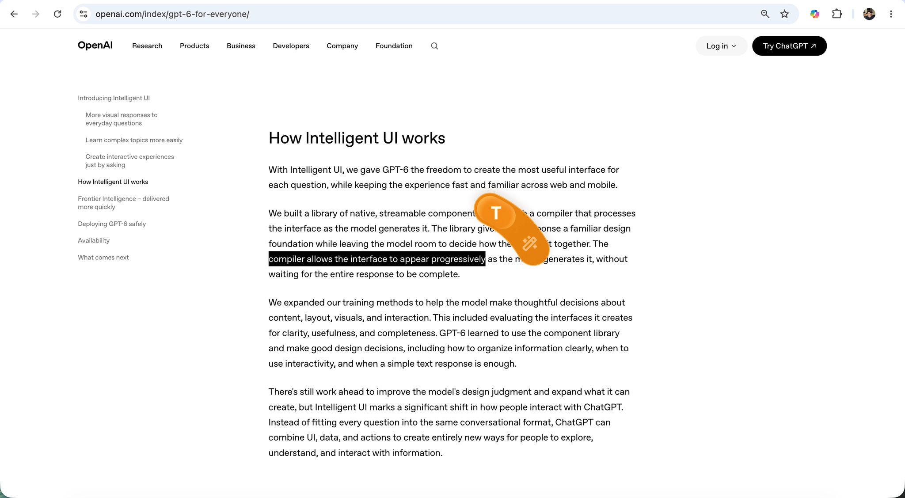
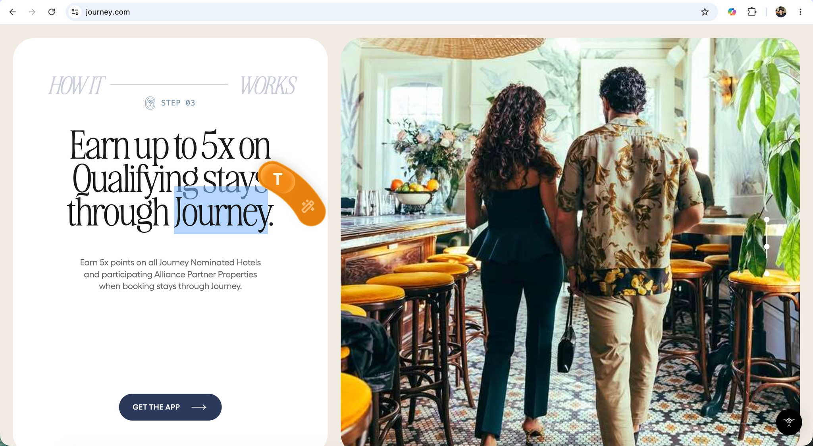
展示记单词时，不再死记硬背，而是会看到收集这个单词时记录的 context 拼贴画

这只手还可以随时帮我修改语言错误，并记录用户在使用语言过程中积累的这些问题，后续更有针对性的提供教学。
比如在Teams里面回复国外同事的消息，我可以唤起 Agent 帮我优化表达
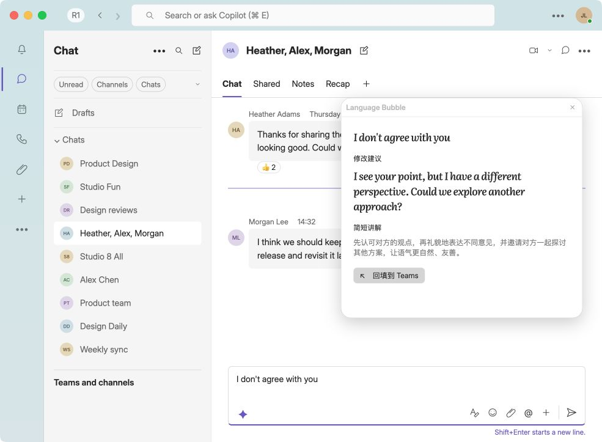
策略2: 用语言，学爱好
这个部分是 Agent 发挥的重点。Agent 可以基于用户见过的、被收集的这些语料，结合用户的爱好来学习，语言水平在自然提升。比如在学习页面，用户可以生成（Agent 也可以主动生成）和爱好相关的学习内容（可以包含文章、播客、游戏等，本次demo只做了文章作为概念展示）。
Agent 一开始不了解用户的喜好（长期可以根据用户收集的 context 进行分析），需要引导用户提供更多context来确保生成质量。比如用户想用英语学习摄影：在用户输入指令创建内容时，先引导用户结构化输入喜欢的爱好、文章长度、要复习的单词范围等，帮助缩小意图表达偏差。（这个页面在选择器上有优化空间，如有更多时间值得优化，有限时间内没有选择打磨这个页面）
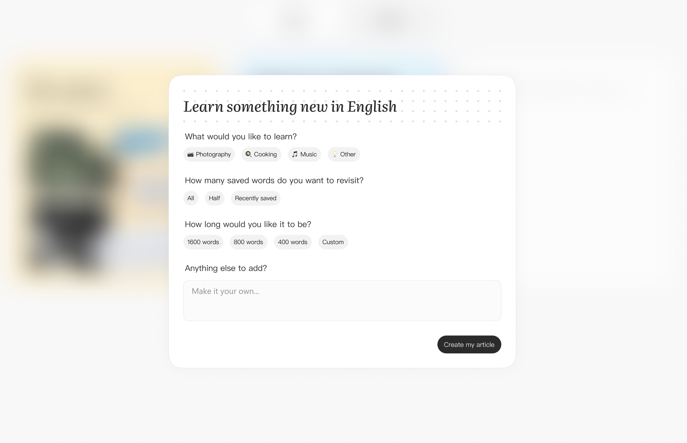
生成内容时，“渐进式”生成降低用户等待焦虑：
将生成的内容按生成速度分类：
- 先展示简单的内容大纲
- 再生成文字
- 再生图片
- 最后生成可交互 Artifact
原则：把生成速度更快，更全局的信息优先展示，让用户可以尽早判断是否符合预期。从而确保靠后、token 消耗量大、耗时长的任务能被提前纠偏。
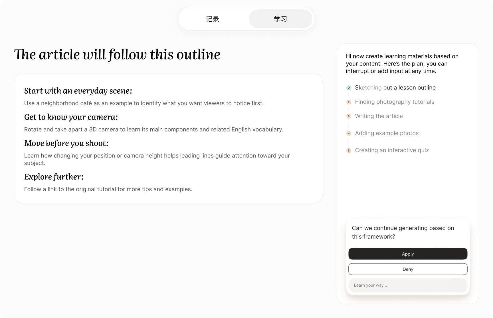
生成中，用户觉得不符合预期，可以随时点击暂停生成，或者直接输入新的 prompt 发送，Steer 当前的任务，Agent 会当前的 loop 中考虑新的用户消息，调整执行计划。
在这个产品中学习内容（或者叫 Artifact）是用户关注的主角，长期也可以根据用户新收集的词汇更新，所以产品结构上，没有把和 Agent 对话作为主界面，确保同一个学习内容 （Artifact）可以通过对话持续更新，而不被频繁的被对话流带走。
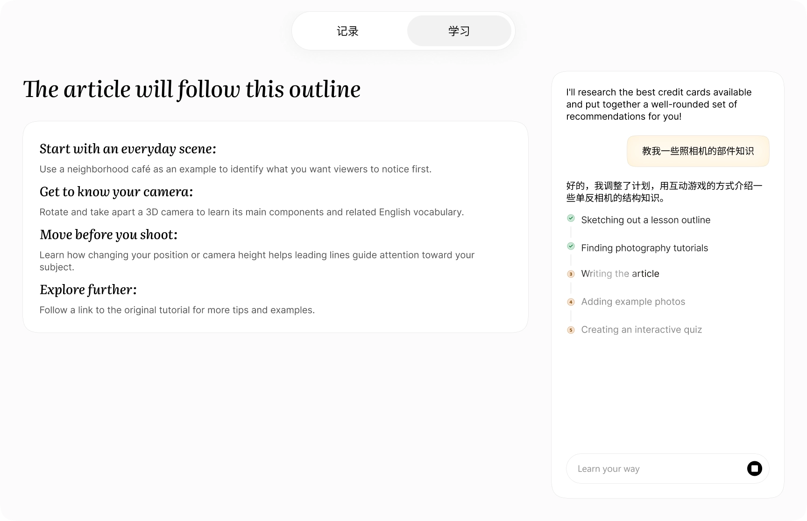
生成结束后，一个常见场景是：一个失败的任务，回顾思维链时，发现是最后几步推理错误导致，但却要重新执行整个任务，大量时间和 Token 都被浪费了。
针对这个问题，我的设计让用户在任务执行中&完成后，可以从思维链的任意节点开始“重新推理”。“重新推理”会保留该节点之前的推理过程和产出，放弃该节点之后的所有内容，并基于用户的补充信息重新推理，提升任务完成效率，减少 Token 浪费。
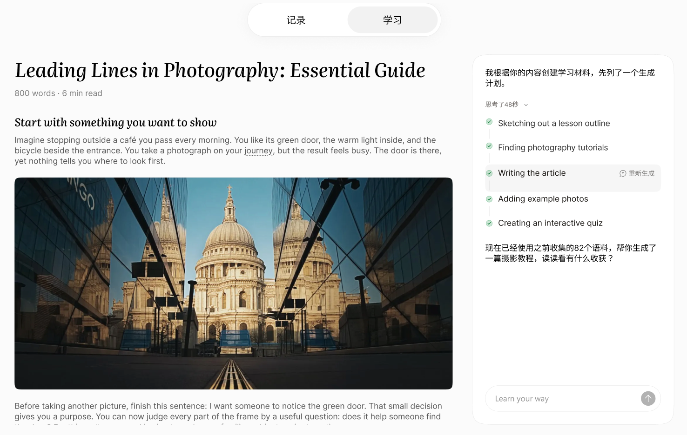
生成出错的场景：
比如过程中 token 用完了（常见于首次生成），可以在用户 Token 快用完时（可以由过往生成计算），提前告知用户，而不是等到生成一半用户才知道无法完成（剩余的 Token 也浪费了）
生成失败 / Token 用尽提示
任务完成后，还可以引导用户在阅读后进行互动学习。（这里肯定还可以开发更多更好玩的互动方式，时间所限仅用答题展示互动概念）
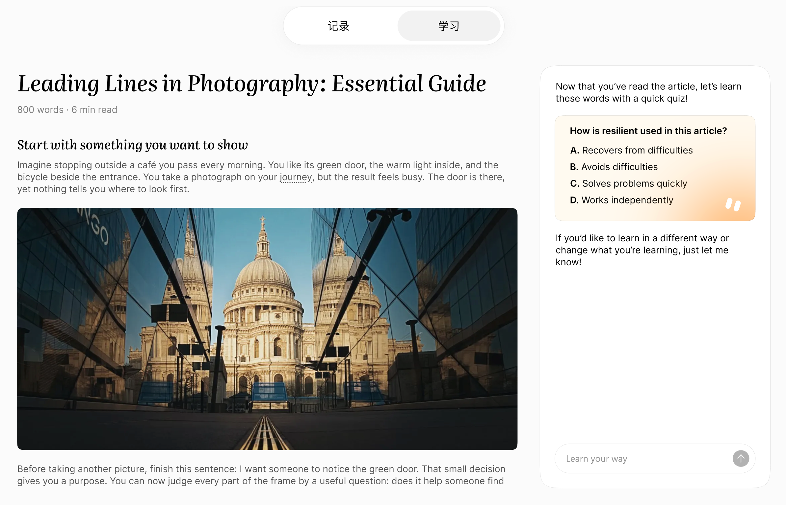
3. 关键页面
视觉设计理念：有人文温度的 AI 产品
用户收集 Context 的过程，有点像小时候剪贴报纸做拼贴画，把好看的图案和句子收集起来贴在笔记本上，也有点像现在流行的手帐。Agent 会帮用户将每一次查找场景都记录下来，复制文案、截图场景、裁剪拼贴，最终可以变成好看的拼贴画。
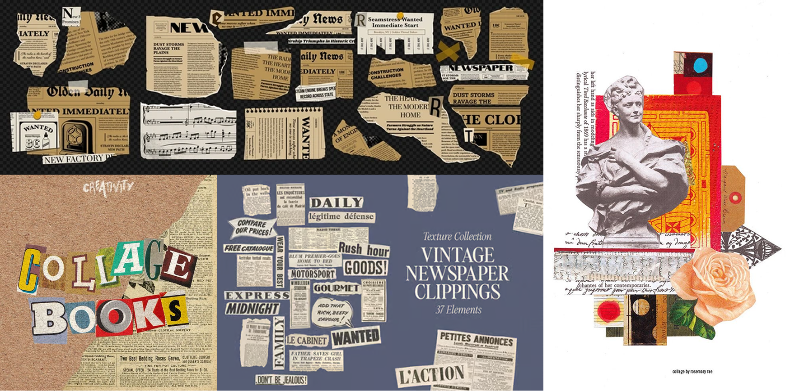
学习页面则充满早上8点钟的阳光，温暖但不刺眼，让用户感到元气满满的学习。
上面很多页面都有一些UI的体现，所以下面这部分我不会再重复放界面，而是放一些细节。
思考：工具类的产品，往往市面上都有不少同类竞品，所以除了基本的功能性、产品的差异化，一些细节里的彩蛋可以让用户有更多的 Wow moment，从而提升用户对产品的忠诚度。
学习页面营造早上阳光洒在桌上的感觉，温暖但不刺眼。阳光会随着用户的鼠标位置而变化（可以鼠标 hover 试一试👇）
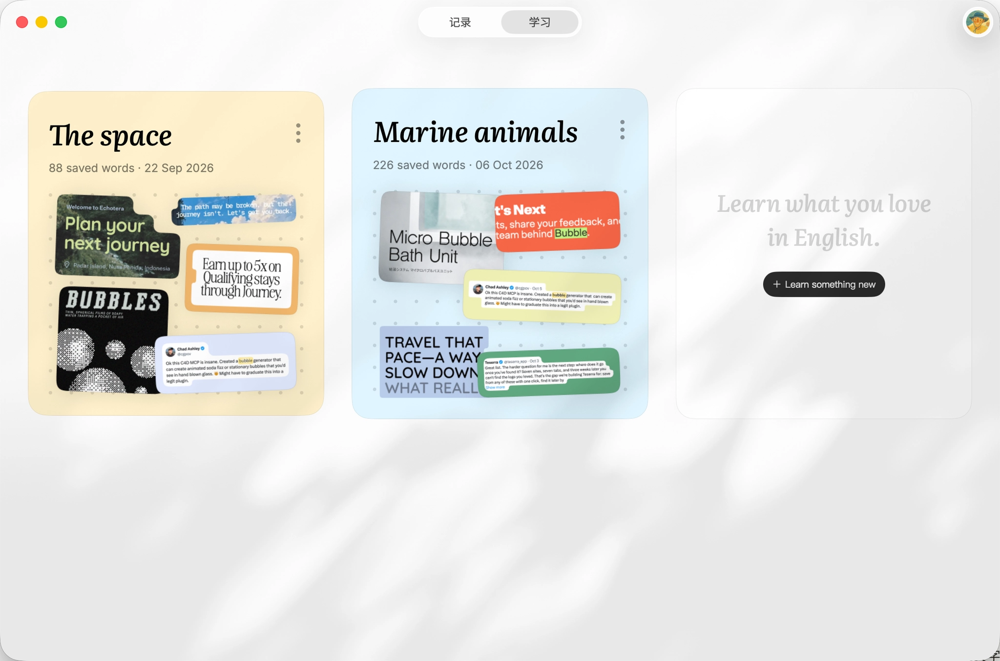
学习页面，有用户自己创造的学习内容 Artifact
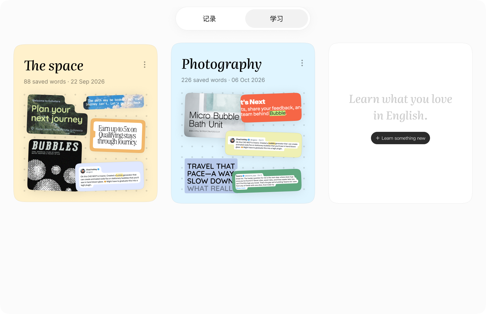
学习内容 (Artifact) 里其实可以生成各种内容，比如游戏、播客、 可互动的学习内容（也许还可以接入 Meshy 的 Mora 生成无限游戏），总的来说，AI for fun… and learning!
比如用英语学习摄影时，可以拆解一下相机的每个部位。用语言，学爱好！
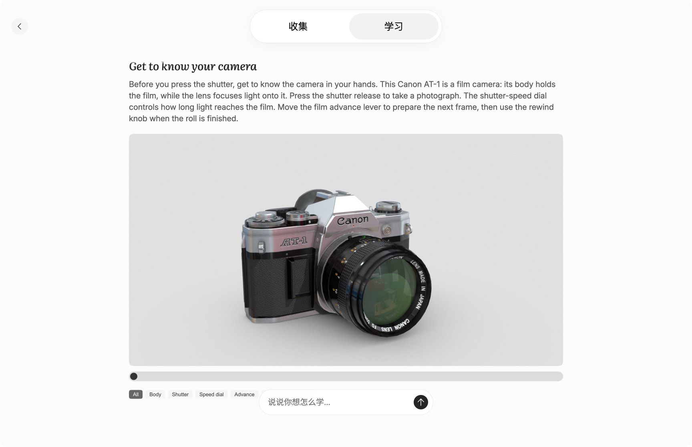
用户选择某个思维链的步骤“重新生成”时，该节点下方受影响的生成物和内容都会消失。就像复仇者联盟中灭霸打的响指。
在文章中遇到收集过的词，鼠标 hover 在上面，会展示用户遇到这个词的所有场景，基于 Context 加深记忆。
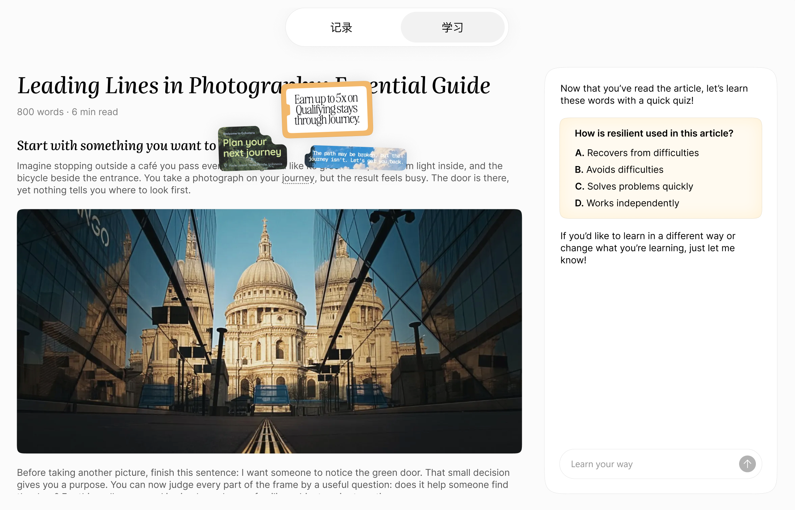
Design System 思路：把复杂界面分解为原子结构
随着用户收集的单词和生成的artifact越来越多，产品可能会变得更臃肿。“原子化设计” 是在系统层进行简化和抽象，提炼出系统中能做几乎所有事的、最基础的元素，定义这个元素的行为和元素间的互动机制。
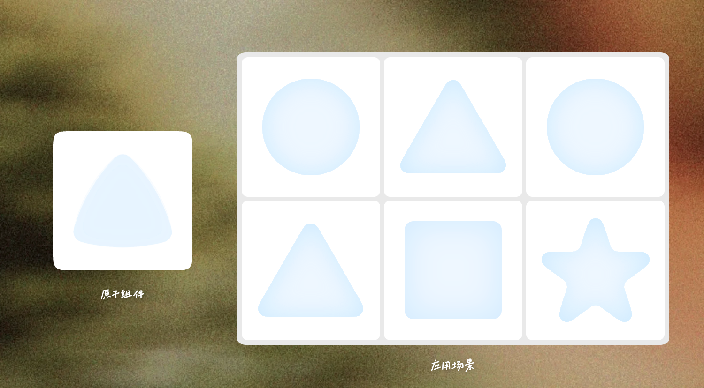
- 在“记录”页面，单词/语料就是原子。只要克制的、不引入新的概念，那么不论用户收集多少语料，整个列表和详情都会很好管理
- “学习”页面，像一个“书桌”，上面摆着 Agent 生成的不同 Artifact，在这里 Artifact 就是原子。
- Artifact 详情页，可以借鉴 Notion 的思路。Notion 的基础原子是“Block”。不论多复杂的 Notion 页面，都是由最基础的 Block 组成，也有点像 Web 开发的“盒模型”。正是 Notion 在早期定义清楚了原子结构 Block 的行为和边界，系统的复杂度就变得可以被管理。
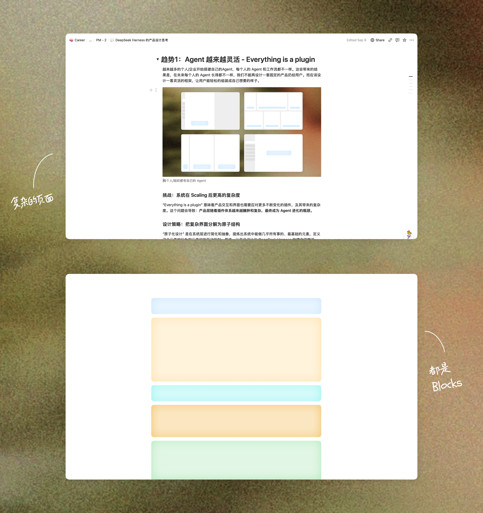
最后
感谢 Meshy 提供的这个测试，让我有机会为自己思考和设计一个每天都会使用的产品。这个产品还会继续打磨和开发，后续会发布到 App store 面向更广泛的用户。
这个项目是用 SwiftUI 开发的 MacOS 应用，以上网页的界面展示是我让 Agent 逆向生成的版本，细节难免缺失，MacOS 版我也打个包放在这里（也还是 Mock 数据版）